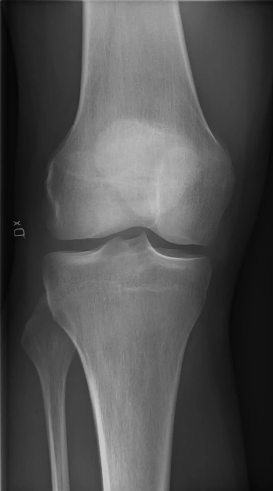
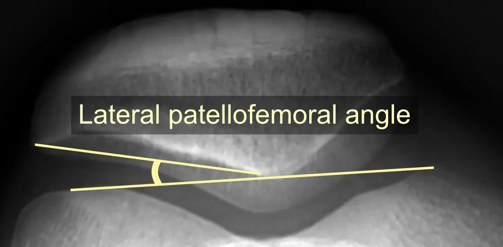

الرضفة
تنقل قوة عضلة الفخذ عبر آلية بسط الركبة؛ يتغيّر الحمل عليها مع زاوية الثني.
ألم مقدمة الركبة حول الرضفة أو خلفها شائع مع الدرج والقرفصاء والجري والجلوس الطويل. لا يعني الألم تلقائيًا تلف الغضروف. يرتكز العلاج على فهم الأحمال وتقوية الركبة والورك والتدرج في العودة للنشاط، مع التحقق من الأسباب الأخرى عند الفحص.



تنقل قوة عضلة الفخذ عبر آلية بسط الركبة؛ يتغيّر الحمل عليها مع زاوية الثني.
سطح التقاء الرضفة بالفخذ هو أحد مصادر ألم المقدمة، لكنه يحتاج تقييمًا سريريًا.
التحكم بحركة الطرف كله يؤثر في الحركة؛ لا تختزل الحالة في اتجاه الرضفة وحده.
يظهر الألم أثناء أنشطة تحمل الوزن مع ثني الركبة، مثل الدرج والجلوس والقيام والقرفصاء. قد يصيب ركبة واحدة أو الاثنتين، وقد يترافق مع أصوات لا تدل وحدها على ضرر.
زيادة الجري أو القفز أو تغيير التدريب بسرعة قد تتجاوز قدرة الأنسجة الحالية. لا يوجد عامل واحد يفسر كل الحالات؛ القوة والتعافي والتحكم بالحركة والتاريخ السابق تؤثر في الخطة.
تورم كبير أو قفل حقيقي أو عدم ثبات بعد إصابة أو عجز عن بسط الركبة يتطلب تقييمًا مختلفًا. ألم موضّع في الوتر أو خلع الرضفة لهما مساران علاجيان خاصان.
يقيّم الطبيب موضع الألم ومدى الحركة وقوة الفخذ والورك وطريقة القرفصاء أو نزول الدرجة. تُراجع تغيّرات التدريب والنشاط والقدرة الحالية بدل الاعتماد على اختبار منفرد.
في الأعراض النموذجية قد لا نحتاج تصويرًا في البداية. الأشعة أو الرنين تُطلب عند إصابة، أو أعراض غير معتادة، أو عدم تحسن يستدعي مراجعة التشخيص.
نحدد الأنشطة المؤلمة ومستوى العودة المطلوب. مسافة الجري أو نزول الدرج أو تحمل الجلوس مؤشرات عملية نستخدمها لمتابعة التحسن.
تقوية الركبة، ومعها الورك بحسب الحاجة، أساس العلاج. يُختار المدى والمقاومة والتكرار وفق القدرة؛ ليس مطلوبًا أداء تمرين مؤلم بشدة حتى يصبح فعالًا.
قد نقلل الجري والقفز أو عمق القرفصاء مع الحفاظ على نشاط محتمل. العودة تكون تدريجية، وزيادة الحمل تعتمد على استجابة الألم والوظيفة في اليوم التالي.
قد يفيد التثبيت بالشريط أو فرشات جاهزة لدى بعض المرضى كوسيلة مساعدة. لا تستبدل برنامج التمارين، ولا توجد حاجة روتينية للجراحة أو الحقن في الألم الرضفي المعتاد.
يُختار المستوى بحسب الألم والقدرة، وتُزاد الجرعة تدريجيًا وفق استجابة الركبة أثناء التمرين وفي اليوم التالي.
تُؤدّى تمارين القوة غالبًا 2–3 مرات أسبوعيًا مع يوم راحة بين الجلسات. ابدأ بالحد الأدنى من التكرارات، ثم زد التكرار، وبعده المجموعات، ثم المقاومة أو عمق الحركة.
الأعداد أدناه أمثلة للبداية يضبطها المعالج بحسب قدرتك. ابدأ بمجموعة أقصر إن لزم. إذا زاد الألم أو بقي أعلى من المعتاد في اليوم التالي فخفّض عمق الثني أو التكرارات أو المقاومة. أوقف القفز والجري إذا ظهر تورم أو عرج.
مدّ الركبة واضغط خلفها برفق على الفراش حتى تشعر بشد مقدمة الفخذ، ثم أرخِ العضلة.
الجرعة: 10 تكرارات مع تثبيت 5 ثوانٍ × مجموعتين، ويمكن أداؤه يوميًا.
التدرّج: زد التثبيت إلى 8–10 ثوانٍ، ثم انتقل لتمارين التحميل عند تحمّلها.
الهدف: تنشيط عضلة الفخذ.
استلقِ على ظهرك واثنِ ركبتيك. ارفع الحوض ببطء ووزّع الوزن على القدمين ثم اخفضه.
الجرعة: 8–12 تكرارًا × مجموعتين، 3 مرات أسبوعيًا.
التدرّج: زد إلى 3 مجموعات، ثم أضف مقاومة أو انتقل للجسر بساق واحدة.
الهدف: تقوية الأرداف والجذع.
استلقِ على جنبك وارفع الساق العليا ممدودة ببطء مع إبقاء الحوض ثابتًا، ثم اخفضها.
الجرعة: 8–12 تكرارًا × مجموعتين لكل جهة، 3 مرات أسبوعيًا.
التدرّج: زد إلى 3 مجموعات، ثم استخدم رباط مقاومة مناسبًا.
تنبيه: تجنب دوران الحوض للخلف.
استخدم كرسيًا ثابتًا. ضع قدميك على الأرض، ثم قف واجلس ببطء مع بقاء الركبتين باتجاه القدمين.
الجرعة: 8–12 تكرارًا × 2–3 مجموعات، 3 مرات أسبوعيًا.
التدرّج: استخدم كرسيًا أخفض تدريجيًا، ثم أضف مقاومة خفيفة.
الهدف: تحسين القوة الوظيفية ومحور الركبة.
قف على درجة منخفضة قرب مسند ثابت. اثنِ ركبة الارتكاز ليلامس كعب القدم الأخرى الأرض بجانب الدرجة، ثم اصعد بتحكم.
الجرعة: 6–10 تكرارات × مجموعتين لكل ساق، 2–3 مرات أسبوعيًا.
التدرّج: زد ارتفاع الدرجة أو عدد التكرارات مع ثبات محور الركبة.
الهدف: التحكم أثناء نزول الدرج.
ضع إحدى القدمين أمام الأخرى. اثنِ الركبتين قليلًا وانزل بالحوض ثم عد لوضع البداية. استعن بمسند عند الحاجة.
الجرعة: 6–10 تكرارات × مجموعتين لكل جهة، 2–3 مرات أسبوعيًا.
التدرّج: زد العمق أولًا، ثم المجموعات، ثم المقاومة.
الهدف: زيادة تحمل الطرف تدريجيًا.
قف بجوار مسند. اثنِ ركبة الارتكاز ضمن مدى تتحكم فيه وابقِ الحوض مستويًا، ثم عد للوقوف.
الجرعة: 6–10 تكرارات × مجموعتين لكل ساق، 2–3 مرات أسبوعيًا.
التدرّج: زد العمق ثم المقاومة مع الحفاظ على التحكم قبل رفع السرعة.
بعد تحمّل تمارين القوة، جرّب قفزة قصيرة للأمام فوق خط. اهبط على القدمين واثنِ الركبتين ضمن مدى مريح وثبّت الهبوط قبل التكرار.
الجرعة: 5–8 قفزات × مجموعتين، مرتين أسبوعيًا مع راحة كافية.
التدرّج: ابدأ بمسافة قصيرة. زدها فقط عند ثبات الهبوط واستقرار الأعراض في اليوم التالي.
ابدأ بعد تحمّل المشي وعلى أرض مستوية. بدّل بين هرولة سهلة ومشي مريح، وتوقف إذا ظهر عرج أو تورم.
الجرعة الابتدائية: دقيقة جري يتبعها 1–2 دقيقة مشي لمدة 15–20 دقيقة، 2–3 مرات أسبوعيًا وبين الجلسات 48 ساعة.
التدرّج: إذا استقر الألم أثناء الجري وفي اليوم التالي، زِد المدة أو المسافة تدريجيًا مع إبقاء السرعة والميل ثابتين. إذا تفاقم الألم، ارجع إلى آخر مستوى تحمّلته.
إذا أجريت جراحة حديثة فاتبع تعليمات فريقك حول تحميل الوزن ومدى الثني. انتقل للمرحلة الثانية عند أداء تمارين البداية دون زيادة تستمر لليوم التالي. وانتقل للمرحلة الثالثة بعد أداء الجلوس والوقوف ونزول الدرجة والقرفصاء المنقسمة بتحكم جيد، ومن دون تورم أو تفاقم مستمر. إذا لم تستقر الأعراض خلال 24 ساعة، ارجع خطوة وخفّض الجرعة.
لا. الجراحة ليست علاجًا روتينيًا لـPFPS، وتُبحث فقط عند وجود مشكلة بنيوية محددة وبعد تقييم متخصص.
التحسن قد يحتاج أسابيع إلى أشهر، خصوصًا مع أعراض طويلة. إعادة التقييم مناسبة إذا لم تتحسن الوظيفة أو ازداد التورم أو تغير نمط الألم.
تبدأ بزيادة مدة النشاط ثم شدته وصعوبة الحركة. التحكم بالقرفصاء والدرج وتحمل التدريب دون تفاقم مستمر أهم من انتظار يوم لا يوجد فيه أي إحساس بالركبة.
قد تشعر بألم في مقدمة الركبة عند صعود الدرج أو نزوله، أو عند ثني الركبة والجلوس طويلًا، أو أثناء الجري. يفحص الطبيب الركبة للتأكد من سبب الألم.
صابونة الركبة عظمة صغيرة تتحرك في مجرى أمام عظم الفخذ. تساعد عضلات الفخذ على فرد الركبة، وقد يزيد الضغط عليها عند ثني الركبة بعمق أو صعود الدرج.
لا. ألم مقدمة الركبة لا يعني بالضرورة أن الصابونة خرجت من مكانها. قد يرتبط الألم بضعف العضلات أو زيادة النشاط بسرعة، لذلك نفحص حركة الركبة وقوة العضلات.
عضلات الورك وطريقة حركة الساق أثناء المشي أو التمارين قد تؤثر في الضغط على مقدمة الركبة. يختلف السبب من شخص لآخر.
نبدأ بتمارين خفيفة تناسب قدرتك، ثم نزيد عدد التكرارات أو صعوبة التمرين تدريجيًا. الزيادة المفاجئة في الجري أو القرفصاء قد تزيد الألم.
غالبًا يكفي الفحص لتحديد السبب. قد نطلب الأشعة إذا حدثت إصابة، أو ظهر تورم واضح، أو علقت الركبة أثناء الحركة، أو لم تتحسن الأعراض بالعلاج.
إذا تكرر تورم الركبة، أو أصبحت تعلق ولا تتحرك طبيعيًا، أو شعرت بأنها تخونك أثناء المشي، أو ازداد الألم رغم العلاج، فراجع الطبيب لإعادة التقييم.
إجابات عملية تكمل الشرح، وتساعدك على مناقشة الخطة مع الطبيب.
لا. المصطلح يصف نمط ألم، ولا يثبت وحده وجود تلف غضروفي.
غالبًا نعدل المسافة والسرعة والتلال مؤقتًا ثم نعود تدريجيًا بدل التوقف المطول.
نعم، وغالبًا تُدمج مع تمارين الركبة لتحقيق تحسن أفضل في الألم والوظيفة.
يختلف حسب مدة الأعراض والحمل والالتزام، ويكون التحسن تدريجيًا لا فوريًا.
المصطلحان ليسا متطابقين. الألم الرضفي تشخيص سريري، بينما وصف الغضروف يتعلق بتغير بنيوي لا يفسر الألم دائمًا.
لا عادة؛ يمكن تقليل العمق والمقاومة واستخدام دعم ثم التدرج. الألم الحاد أو المتزايد يستدعي تعديل التمرين.
قد يكفي خفض المدة أو التكرار وتغيير التدريب مؤقتًا. الاستمرار أو التوقف يُحددان بحسب الأعراض والفحص.
نعم قد يحدث. تغيير وضع الركبة وفترات الحركة القصيرة يساعد، لكن الأعراض المستمرة تحتاج تقييمًا.
الصوت غير المؤلم دون تورم أو قفل شائع، ولا يكفي لتشخيص تآكل الغضروف.
قد يعود مع زيادة الحمل بسرعة. الحفاظ على القوة والتدرج في التدريب يقللان احتمال تكرر الأعراض.
إذا استمر ألم مقدمة الركبة أو حدّ من الرياضة والدرج، يفيد التقييم في تأكيد التشخيص وبناء برنامج يناسب نشاطك.
دليل أفضل ممارسة للألم الرضفي الفخذي — BJSM 2024
تختلف توصيات الإرشادات بحسب نوع الإصابة ونطاقها. الجرعات والقيود ومواعيد العودة تُفصّل بعد الفحص؛ تُذكر الفوائد المحتملة دون ضمان لنتيجة علاجية.
مصادر الرسوم وتراخيص استخدامها موثقة أسفل كل صورة. مجموعة Bioicons.